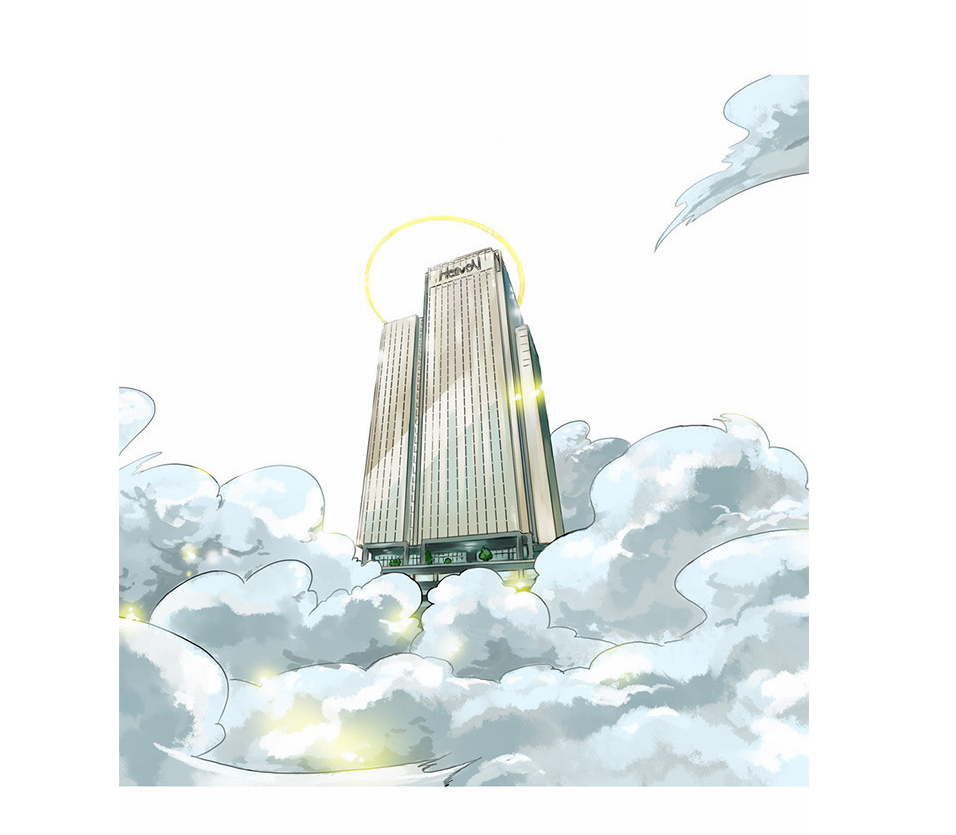

20150883 오대준
기획안
펜시캐릭터
로키
언제나 장난기가 넘치는 위트있는 신. 그래서인지 사람들, 혹은 신들이 자신에게 거는 기대에 부합하는 것이 아닌, 오로지 자신이 원하는 일을 해내고야 만다. 또한 자신에게 가해지는 부조리를 참지 못하고, 당한 것에 대해서는 반드시 복수한다. 하지만 또한 누군가가 필요로 하는 것을 전달해주기도 한다. 화가 나면 어느 누구도 무뤂꿇리는 신랄한 독설가이며, 마침내는 라그나로크를 이끄는 한 축으로 활동한다. 의외로 자식에 대한 사랑이 강한 인물.
장소
이그드라실과 9세계에서 차용한 가상의 배경인 월목 주식회사.
아이템
출타, 출장을 갈 시에 건물 밖으로 나가자마자 자신이 가장 아끼는 신발로 갈아신는데, 발은 무척 편하지만 오래된 신발이라 냄새가 심하다. 하지만 오록기는 그 신발을 잘 때도 신고 잔다.
배경이야기
이그드라실과 9세계 설정에서 차용한 가상의 배경인 월목 주식회사에 새로운 특채 사원으로 오록기 들어온다.
사진 및 관련 링크
로어 올림푸스

ohmygod
캐릭터 디자인 및 컨셉